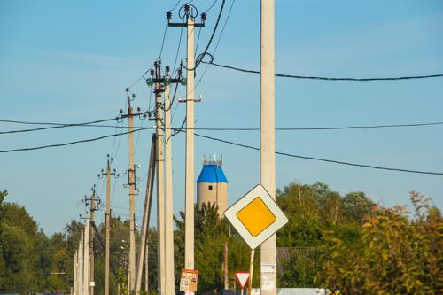
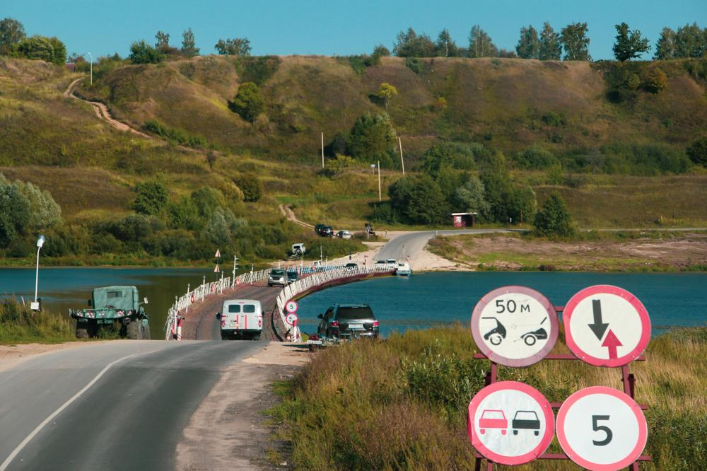
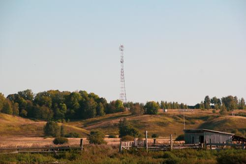
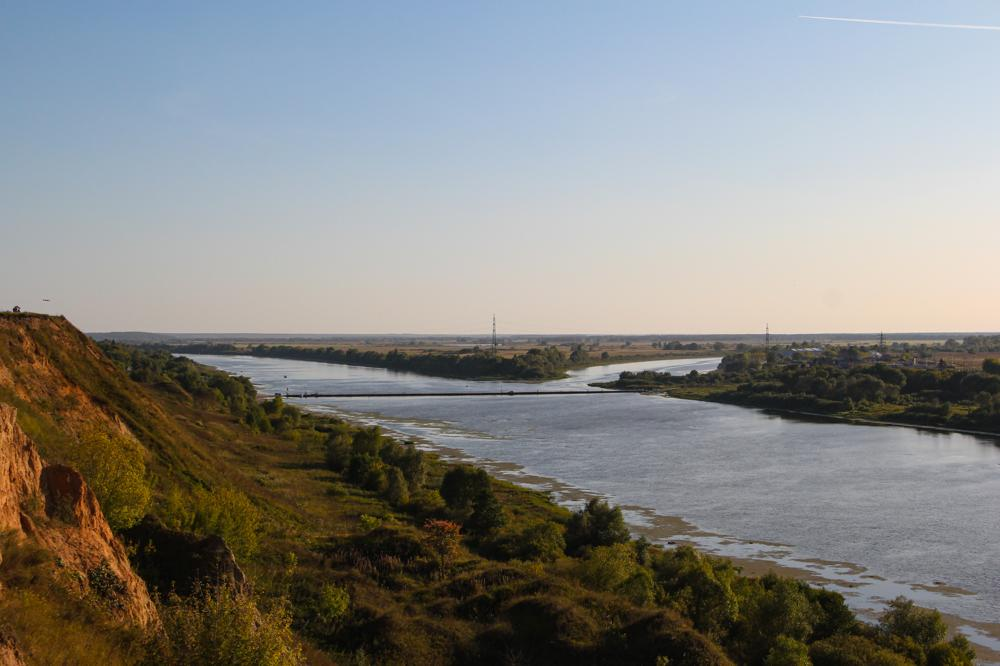

-  写真第1枚" title="2019-08-24 -> 写真第1枚（クリックして完全版を見る）">
-  写真第2枚" title="2019-08-24 -> 写真第2枚（クリックして完全版を見る）">
-  写真第3枚" title="2019-08-24 -> 写真第3枚（クリックして完全版を見る）">
-  写真第4枚" title="2019-08-24 -> 写真第4枚（クリックして完全版を見る）">
- 写真第5枚" title="2019-08-24 -> 写真第5枚（クリックして完全版を見る）">
.jpg "2019-08-24 -> 写真第6枚（クリックして完全版を見る）")